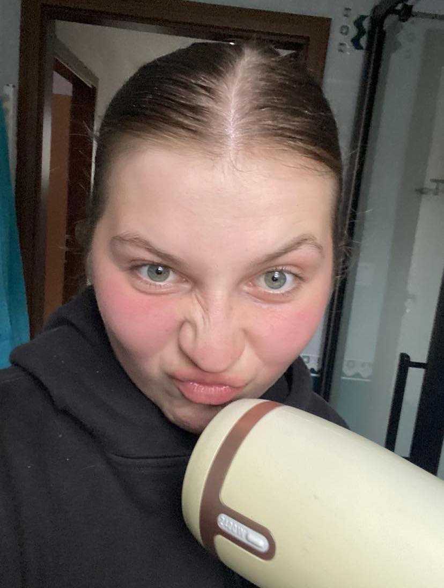

Us twoüíô
-Goofy ahhhh.

Janiƒçkaüíô
Why i love her so muchüíô :
-She is the reason why I love anime so much. Every time we watched an anime together, I enjoyed it so much that I will never forget those moments.
-She is one of the most sincere people in the world, I know that when she says something, she means it seriously.
-When I'm with her, I feel very comfortable, I can be myself around her and enjoy every moment.
-Engaging in serious conversations with her is above all, her sharp mind has an answer to everything I throw at her.
-Her special style of dressing is a clear lover of the color black, with perfect blonde hair transitioning to a smooth, rich brown color, that always captivates me.
-Overall, she is an amazing person with a pure soul, a pleasant voice, and resilient to the point that she doesn't easily give up on anything.
->Song that reminds me of her the most<-Reason, why I don't want to lose her :
-Losing you would mean losing a part of me, even though it may sound cliché, losing someone you've grown up with is challenging, we have so many beautiful memories together that bring pleasant recollections. We've made a lot of mistakes, but through those mistakes, we've grown even closer. Most importantly, it's the effort that you have put to save the relationship that was so beautiful that all I could do was smile, forgive, and move forward together. I regret that lately I haven't been able to show you my effort, to make you see it the way I saw it in you. But that doesn't mean I'll give up, hoping that everything will be okay. That's why I'm creating a page about YOU now because you mean a lot to me, and I want to prove that you are worth my time and always will be. You mean a hell of a lot to me, Janicka. I'm sorry if the page looks a bit goofy, but I tried to make it today, created with your favorite color and mine BLACKnBLUE. The end, with the words, now it's time for actions.
Us twoüíô
Janiƒçkaüíô